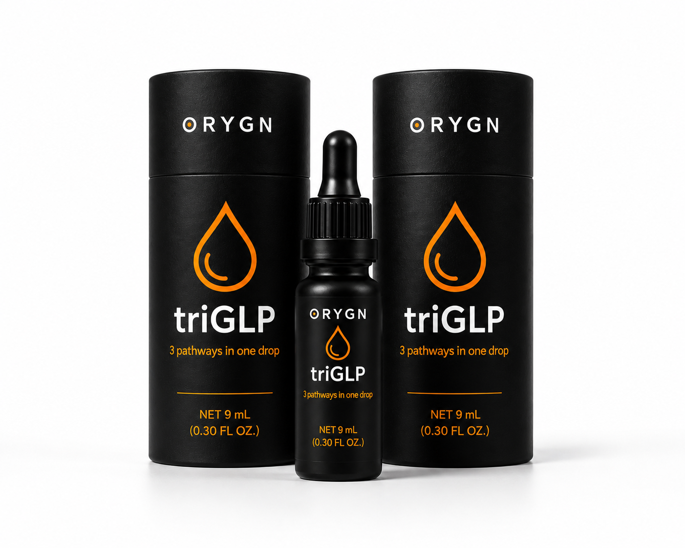

Distribuidor Independiente
Distribuidor Independiente
Distribuidor Independiente
Distribuidor Independiente
TriGLP es presentado por ORYGN como una alternativa natural dentro de la tendencia GLP-1 y el bienestar metabólico. Está formulado en gotas sublinguales con péptidos bioactivos de salmón noruego. Sin agujas y sin necesidad de prescripción médica.
El interés por las soluciones relacionadas con GLP-1 ha crecido enormemente. TriGLP se posiciona como una opción natural orientada al bienestar metabólico, sin agujas y dentro del ámbito de los suplementos.
Por sólo 64€ / $75 USD + gastos de envío
Descubre los secretos detrás de la ciencia metabólica y el impacto real de lo natural frente a lo sintético.
La verdad sobre las alternativas naturales al GLP-1.

TriGLP no es un suplemento tradicional. ORYGN pone a tu disposición una fórmula de péptidos bioactivos cuyo formato sublingual está diseñado para favorecer una absorción eficiente, evitando el primer paso hepático con el objetivo de mejorar la biodisponibilidad frente a formatos digestivos tradicionales.
+ gastos de envío
TriGLP es el único péptido bioactivo de triple acción que activa simultáneamente tres rutas metabólicas críticas.
Está orientado al apoyo de señales relacionadas con saciedad y control del apetito. Favorece la saciedad natural y puede apoyar la claridad mental dentro de una rutina saludable, aportando una claridad cognitiva mientras ayuda con los antojos sin esfuerzo.

Está orientado al apoyo de la barrera intestinal. Actúa como un escudo que contribuye al enfoque de bienestar intestinal y reduce la inflamación sistémica, optimizando la microbiota para una absorción de nutrientes impecable.
Optimiza la sensibilidad a la insulina y se asocia, con marcadores relacionados con energía y metabolismo. Mejora el transporte de oxígeno para una energía física real, claridad mental y apoyo al Performance Aging (vitalidad a largo plazo).
64€ / $75 USD • envío desde 10€ • 3-10 días
El camino hacia la optimización metabólica es un proceso constante y seguro.
Al ser gotas sublinguales, los péptidos evitan los ácidos del estómago y van directos al torrente sanguíneo. Notarás una reducción sutil del apetito y mayor claridad mental rápidamente.
Mejora significativa en la saciedad. La inflamación se reduce drásticamente, la energía se estabiliza durante el día y el peso comienza a descender.
Recomposición corporal evidente y metabolismo optimizado. Es la fase de Performance Aging: resultados sostenibles, sin efecto rebote y vitalidad renovada a largo plazo.
Una tecnología molecular diseñada para devolverte el control de tu metabolismo.
Ideal si sientes que tu metabolismo se ha ralentizado de forma natural. TriGLP ayuda a optimizar las señales metabólicas y a recuperar tu vitalidad activa.
Un apoyo excelente para mujeres que atraviesan transiciones hormonales (premenopausia y menopausia), equilibrando los ritmos metabólicos internos.
Perfecto para deportistas que buscan recomposición física. Favorece la pérdida de grasa mientras protege y preserva el 100% de la masa muscular magra.
Para quienes buscan controlar la saciedad sin dietas restrictivas extremas ni batallas de fuerza de voluntad, logrando energía constante sin bajones.
Más de $50 millones de dólares en investigación científica clínica respaldan la seguridad y la eficacia de cada servicio de triGLP.
El Dr. César Fernández desglosa la ciencia detrás de ORYGN en esta conferencia técnica.
Especialista en Nutrición Clínica (Stanford) con más de 30 años de experiencia médica. Ha dedicado su carrera a la investigación de la biotecnología celular y el impacto de la nutrición en la salud metabólica global.
Personas como tú ya han experimentado sus efectos.
"Después de intentar con dietas estrictas, TriGLP fue lo único que me quitó la ansiedad por el azúcar sin causarme nerviosismo. He perdido 8 kilos en 2 meses."
"Lo mejor es que no tiene efectos secundarios como las inyecciones. Mi médico está sorprendido con mis últimos análisis de sangre."
"Antes comía emocionalmente por ansiedad. Desde la primera semana noté cómo me sentía llena mucho antes. Cambió por completo mi relación con la comida."
Ingredientes tan puros que redefinen el estándar de calidad en suplementos.
Biotecnología de un alimento funcional: Proteína hidrolizada desarrollada por Hofseth BioCare ASA (Noruega). 100% puro, procesado en horas, libre de antibióticos y con una potencia 10X superior a extractos comunes.
Potente antioxidante natural que potencia la biodisponibilidad de los péptidos y aporta un sutil sabor cítrico fresco.
Conocido por sus propiedades digestivas y antiinflamatorias. Ayuda a calmar el sistema digestivo mientras los péptidos hacen su trabajo.
Base pura y libre de contaminantes que asegura la estabilidad y máxima absorción sublingual de los principios activos.
Fabricado con estándares de calidad farmacéutica, no de simple suplemento alimenticio.
Tecnología de extracción enzimática protegida por patentes duales. Único entre 1.324 hidrolizados comerciales analizados.
Salmón atlántico de aguas prístinas noruegas. Trazabilidad completa del origen al producto final.
Simple, natural y sin complicaciones. Así de fácil es incorporar TriGLP a tu rutina diaria.
Agita bien antes de cada uso. Los ingredientes son muy concentrados y pueden asentarse en el fondo.
Deposita las gotas bajo la lengua (absorción sublingual). También puedes usar una cucharita para contarlas con precisión.
Deja que los péptidos se absorban directamente al torrente sanguíneo a través de los vasos de la boca. Luego traga.
Para una absorción óptima, evita alimentos y bebidas durante 10-30 minutos después de tomar las gotas.

Reparte en 2 servicios (mañana y tarde)

En una sola toma (por la mañana)
Cada frasco de 9 mL contiene 36 tomas completas. Viene presentado en el exclusivo tubo ORYGN, un estuche premium diseñado para proteger la fórmula molecular y garantizar su máxima estabilidad.
Almacenamiento: Guarda en un lugar fresco y seco, lejos de la luz solar directa.
Tip: Escucha a tu cuerpo. Puedes ajustar el horario de tus tomas según te funcione mejor. La constancia importa más que la perfección.
+ envío internacional (10€-20€) • Pack de 2 botellas: 112€ / $130.00
Creemos en la honestidad radical. Para confiar en lo que es nuestro producto, primero debes saber lo que NO es.
TriGLP es un suplemento dietético 100% natural. No es un fármaco sintético y no requiere prescripción médica para su compra.
A diferencia de medicamentos como Ozempic o Mounjaro (agonistas GLP-1 sintéticos), TriGLP no imita artificialmente tus hormonas. Apoya las vías naturales de tu cuerpo mediante péptidos bioactivos de salmón.
No está diseñado para que dejes de comer. Está formulado para apoyar el control de hábitos relacionados con la alimentación, mejorar tu saciedad y ser el complemento perfecto para un estilo de vida y nutrición saludables.
TriGLP no contiene semaglutida, tirzepatida ni otros principios activos farmacológicos GLP-1. Si estás en tratamiento médico, tienes diabetes, enfermedad metabólica, embarazo, lactancia o tomas medicación, consulta con un profesional sanitario antes de usar cualquier suplemento.
Resolvemos tus dudas sobre la alternativa natural en bienestar metabólico.
Los medicamentos GLP-1 como semaglutida o tirzepatida son fármacos sujetos a prescripción médica. TriGLP es un suplemento dietético en gotas sublinguales con péptidos bioactivos de salmón noruego. ORYGN lo posiciona como una alternativa natural dentro de la tendencia GLP-1, pero no es un medicamento ni sustituye tratamientos médicos.
Se aplica directamente debajo de la lengua (absorción sublingual). Con la nueva presentación de 9 mL y 36 servicios, en fase de resultados (toma doble) una botella dura exactamente 18 días. En fase de mantenimiento (toma única), dura 36 días por botella.
No. TriGLP está clasificado como NDI (New Dietary Ingredient) por la FDA de EE.UU. con estatus self-GRAS. Al ser un suplemento dietético natural y no un fármaco sintético, puedes adquirirlo directamente sin receta.
triGLP se presenta ahora en el exclusivo tubo ORYGN, un estuche premium de diseño elegante que ofrece una protección superior para la fórmula molecular, preservando su estabilidad y garantizando 9 mL (36 tomas) de producto puro.
Para la fase de resultados activos, se aconseja dividir el consumo en dos servicios diarios (uno por la mañana y otro por la tarde/noche) para mantener una absorción metabólica constante. Para mantenimiento, basta con un solo servicio por la mañana.
Al ser 100% natural — derivado de salmón noruego grado sashimi, limón orgánico y jengibre orgánico — no tiene los efectos secundarios severos asociados a los inyectables sintéticos. Los estudios clínicos confirman su perfil de seguridad.
La documentación de la marca menciona resultados observados en periodos de 6 a 8 semanas, pero no deben interpretarse como garantía individual. La respuesta depende de hábitos, alimentación, actividad física, constancia y situación personal.
Realizamos envíos internacionales a un número creciente de países mediante mensajería privada express. Dado que la disponibilidad y los costos exactos (generalmente entre $10 y $20 USD) cambian constantemente, te recomendamos verificar la información en tiempo real seleccionando tu país en la tienda oficial.
Desarrolla una actividad comercial independiente dentro del sector del bienestar. El mercado GLP-1 alcanzó $48.3B en 2024 y se proyecta a $121B+ para 2034.
La industria farmacéutica ha creado una demanda masiva mundial educando sobre el GLP-1, pero los
inyectables son invasivos, costosos y restrictivos. Solo el 8-10% que los desean los están
usando.
TriGLP se posiciona como la solución: apoyo metabólico avanzado de forma
natural,
sin dolor y a solo 64€ / $75. Como promotor independiente, captura una porción de esta
mega-tendencia
global con un producto altamente escalable.
Y lo mejor de todo es que es un producto de
alta demanda que no requiere de grandes conocimientos para ser vendido.
Cuatro formas principales de ganar + 5 adicionales. Sin experiencia previa necesaria.
Ganas el 50% en cada compra de tus clientes retail. Vendes $100, ganas $50. Repetible al infinito con cada recompra de tus clientes.
Impulsa tu negocio desde el día 1 mediante la duplicación y el movimiento de producto. Empieza a ganar desde tu primera semana activa.
Gana un bono mensual recurrente simplemente construyendo tu equipo. Escala desde $100 hasta $700 al mes a medida que creces, según rango, volumen y requisitos de cualificación.
Gana del 8% al 20% semanal sobre el volumen generado por tu equipo. El límite escala con tu rango hasta $20,000 por semana.
Descarga las herramientas oficiales y profundiza en el plan de compensación.
Conoce todo sobre la empresa, la ciencia detrás de TriGLP y la visión de ORYGN.
Descargar PDFDescubre al detalle cómo maximizar tus ganancias compartiendo salud e innovación.
Descargar PlanÚnete a nuestro equipo y accede a formaciones exclusivas, apoyo continuo y un sistema de formación y herramientas comerciales.
¡Hazte Distribuidor/a Hoy Mismo!ORYGN se posiciona en el cruce entre biotecnología, ingredientes de origen natural y venta directa en el sector del bienestar.
Tecnología desarrollada internamente, no licenciada. Cada aspecto de triGLP ha sido investigado, refinado y protegido por patentes duales.
Tecnología oral líquida de alta biodisponibilidad. Absorción sublingual directa al torrente sanguíneo. Olvídate de inyecciones, jeringuillas y visitas clínicas.
No somos un suplemento más. Fabricamos con procesos de grado farmacéutico, desde el origen del salmón hasta la botella final.
Sin intermediarios médicos. Tu bienestar, tu elección. Producto disponible directamente para cualquier persona que quiera tomar control de su salud metabólica.
La marca comunica datos de estudios y documentación técnica sobre TriGLP. Esta página resume esa información con fines divulgativos y comerciales, sin sustituir fuentes originales ni consejo profesional.
Al unirte como promotor, no estás solo. Accedes a formaciones, sistema de marketing preconfigurado y una comunidad global que te impulsa al éxito.
"En un panorama sanitario dominado por gigantes farmacéuticos, nosotros nos alzamos como pioneros del cambio. Nuestras bases son revolucionarias, nuestra innovación no tiene igual y nuestro propósito es inquebrantable: acercar soluciones de bienestar de origen natural a personas interesadas en mejorar sus hábitos y su salud metabólica."